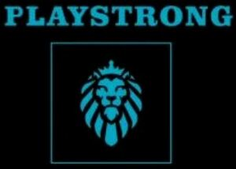

Trade Mark Journal No.2025/021 23 May 2025
WO0000001853474 (5,10)
Office of origin: Albania
Date of International Registration:22 February 2025
Date of designation in the UK:
22 February 2025

The trademark consists of the figure composed by: A square-shaped figure with a black backround color. Inside it, there is the word " PLAYSTRONG " with capital letters in blue color. In the lower part, inside a small square with blue outline it's placed a figurative elements "Lion's Head" uniquely stylized in blue color.
The mark contains the colours black and blue.
- Class 5
- Pharmaceuticals; pharmaceutical preparations; aloe vera preparations for pharmaceutical purposes; bacterial preparations for medical and veterinary use; biological preparations for medical purposes; biological preparations for veterinary purposes; chemical preparations for medical purposes; chemical preparations for veterinary purposes; enzyme preparations for medical purposes; teeth filling material; albuminous foodstuffs for medical purposes; dietetic foods adapted for medical purposes; albuminous preparations for medical purposes; lotions for pharmaceutical purposes; fungicides; food for babies; protein dietary supplements; herbal extracts, other than essential oils, for medical purposes; vitamin preparations; medicines for human purposes; ferments for pharmaceutical purposes; dietary fiber; dietetic substances adapted for medical use; capsules for medicines.
- Class 10
- Condoms; dental apparatus and instruments; surgical apparatus and instruments; orthopedic articles; orthopedic belts; orthopedic footwear; physical exercise apparatus for medical purposes; physiotherapy apparatus; veterinary apparatus and instruments; compressors for surgical purposes; elastic stockings for surgical purposes; knives for surgical purposes; saws for surgical purposes; dental apparatus, electric; teeth protectors for dental purposes; armchairs for medical or dental purposes.
DREAM PHARMA SHPK
Representative: Vilson Duka, RegTMark: Rruga Mahmut Allushi nr 45,, Hyrja nr 23, kati i 2-te, Ap nr 4, Tirane, ALBANIA